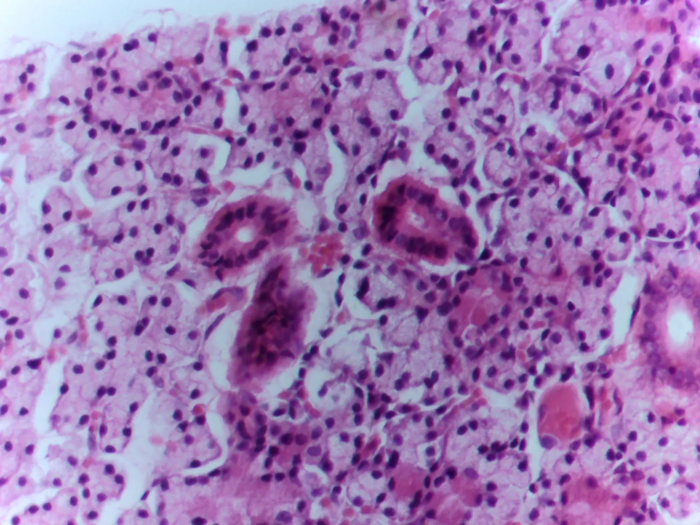

Lâmina 39 · Sistema digestório
Glândula sublingual


Toque na imagem para ampliar. No computador, use as setas do teclado para trocar de imagem.
Lâmina 39 · Sistema digestório

Toque na imagem para ampliar. No computador, use as setas do teclado para trocar de imagem.